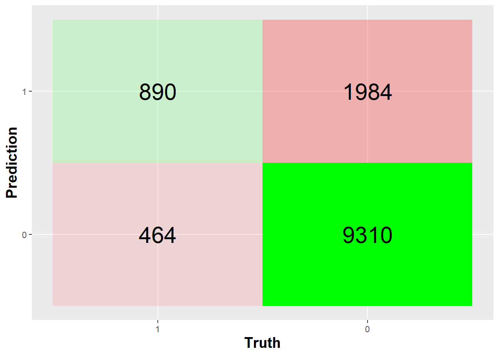
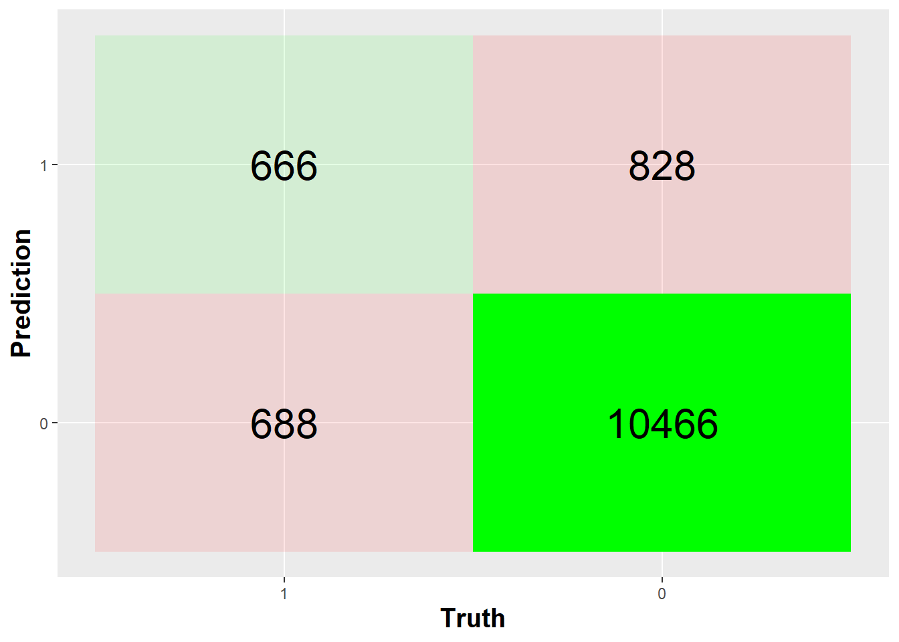
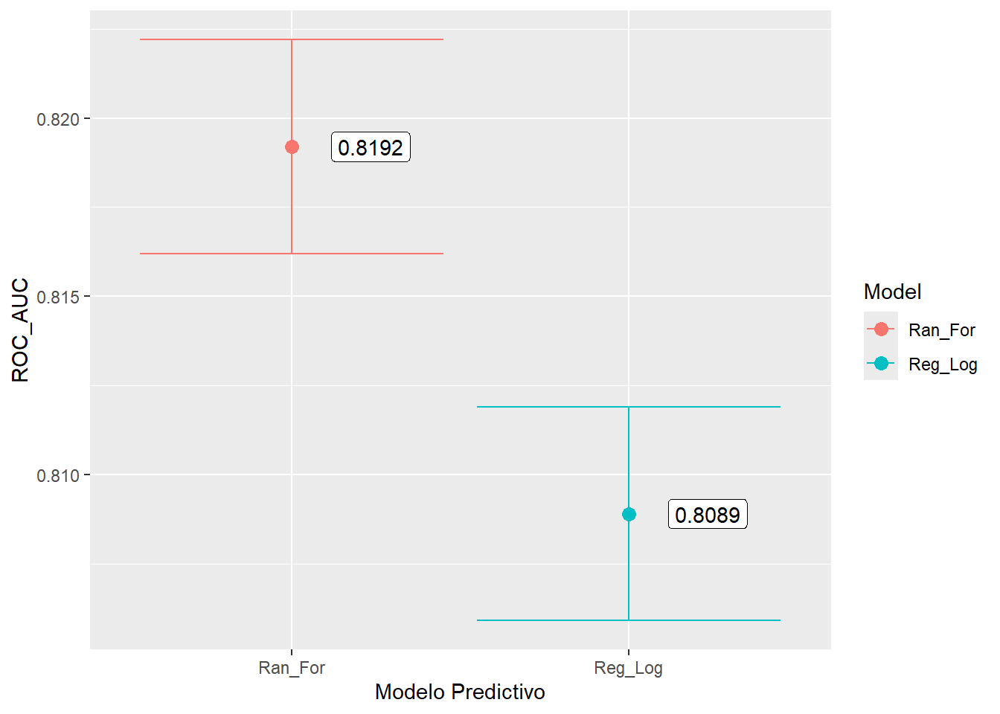

UNIVERSIDAD NACIONAL DE SAN ANTONIO ABAD DEL CUSCO “Modelamiento Predictivo para Determinar el Riesgo Crediticio”
Chullo P. OscarSTU, Quispe V. WalterSUPERV, Octavo Ciclo
° Simposio Descentralizado de Matemática y Estadística
° Escuela Profesional de Matemática
EMAIL 193029@unsaac.edu.pe / walter.quispev@unsaac.edu.pe

Resumen
El propósito del siguiente póster es dar a conocer la estimación de la probabilidad de impago para medir el riesgo crediticio de una entidad financiera. Se puso en práctica un modelo de métodos estadísticos, así como también uno basado en el aprendizaje automatizado (Machine Learning). En la investigación, se muestra la implementación (R + Python) y uso del algoritmo “Random Forest” de aprendizaje automatizado para construir un modelo que prediga la probabilidad de impago en función de algunos indicadores de riesgo del portafolio de clientes de una institución financiera. Se muestra la aplicación de los modelos: “Regresión logística” y el algoritmo “Random Forest”, de donde se tiene que el modelo generado por el algoritmo Random Forest es el más efectivo para nuestro conjunto de datos, puesto que se muestra la comparación en términos de la métrica de evaluación del área bajo la curva (AUC).
Palabras Clave: Probabilidad de Impago, Machine Learning, Regresión Logística, Random Forest.
Introducción
En la última década se ha hecho evidente la participación activa de las entidades financieras, mas aún en la época actual de reactivación económica del pais. Es por ello que en estas entidades se presentan nuevos usuarios o clientes, por lo que nos interesaria conocer acerca de la probabilidad de impago que estos puedan presentar, mediante el aprendizaje supervisado.
Se plantearon los siguientes objetivos: Evaluar modelos para conocer la probabilidad de impago o Default, determinar el modelo estadístico de mayor precisión y finalmente dar a conocer el package posterdown como herramienta de Rmarkdown para la creación de posters. (Thorne 2019).
Metodología
Se han utilizado una data de 50,206 registros con 44 variables que fueron recopilados por una entidad financiera durante el periodo: Enero - 2017 a Marzo - 2018.
Figura 1: Pasos del Modelamiento

En Data Understanding se ha visualizado que existen datos perdidos, por lo que se le ha aplicado una metodología de Feature Engineering Selection en Python, para elegir las 10 variables mas significativas.
A estas variables se le aplicamos dos modelos predictivos (Model Selection), que puedan determinarnos la probabilidad de impago de un cliente. (Shi 2022)
Resultados
Se han aplicado 2 modelos: Logistic Regression y Random Forest; teniéndose como variable respuesta Default, el cual presenta la característica de ser dicotómica, teniéndose: 0 = No Default y 1 = Default, de los cuales se obtuvo los siguientes resultados: (Kuhn Max 2022)
Regresión Logistica
Figura 2: Matriz de confusión - Reg Log

Modelo: Regresión Logística
\[log\frac{\rho}{1-\rho}=-2.43+(-1.01*X_1)+(-0.23*X_2)+\] \[(-0.05*X_3)+(-0.04*X_4)+(-0.02*X_5)+\] \[0.00*X_6+0.04*X_7+0.09*X_8+0.31*X_9+\] \[1.81*X_{10}\]
Figura 3: Clasificación de parametros - Regresión Logística

Figura 4: Curva ROC: Regresión Logística

Random Forest
Figura 5: Matriz de confusión - Random Forest

Figura 6: Curva ROC: Random_Forest

Realizamos la comparación de los modelos mediante ROC_AUC de cado uno de ellos, obteniendose:
Figura 7: Comparación de modelos predictivos

Conclusión
En conclusión, se tiene que el modelo Random Forest es el modelo predictivo con mejores características si se quiere determinar la probabilidad de impago de un cliente.
Puesto que cuenta con una mayor precisión que el modelo Regresión Logística. (Bellini 2019)
Try posterdown out! Hopefully you like it!